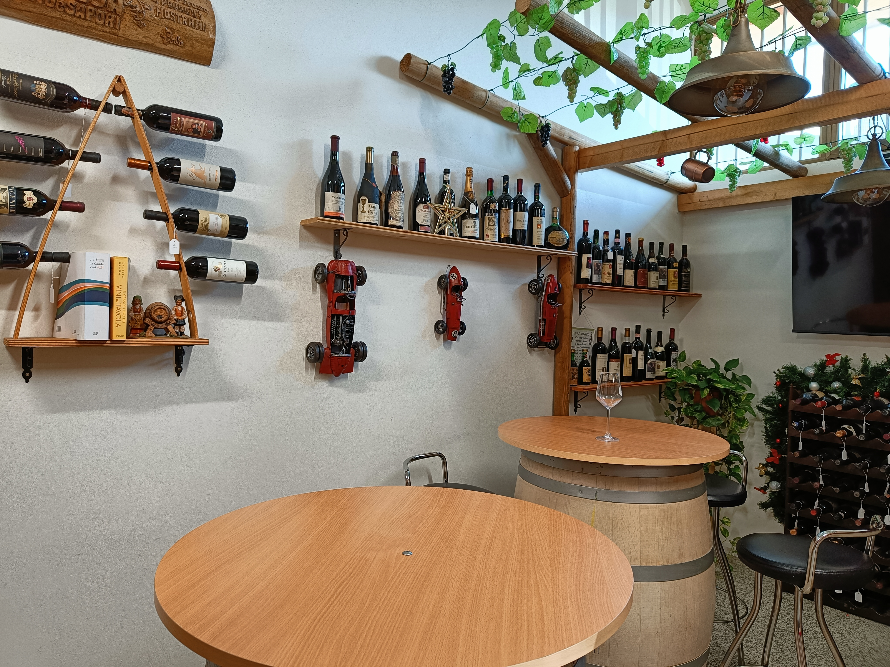
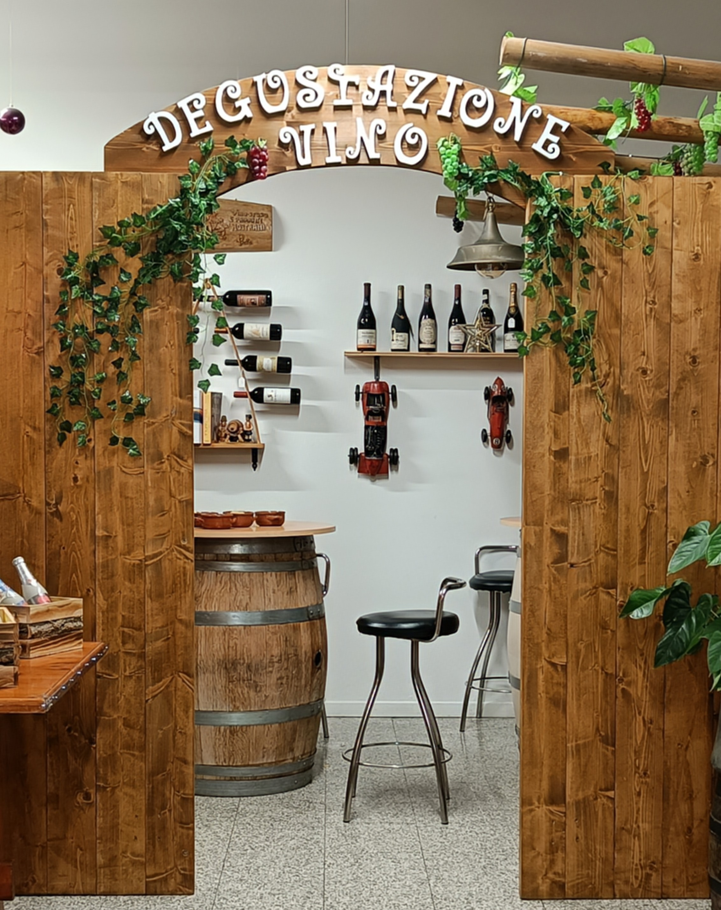
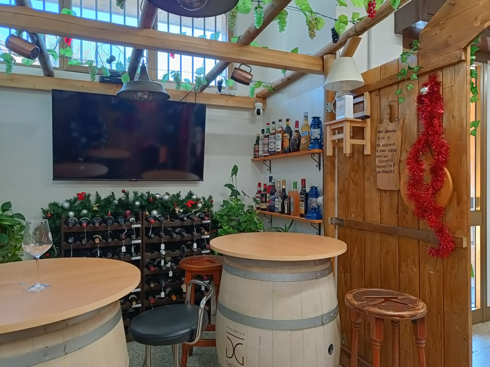
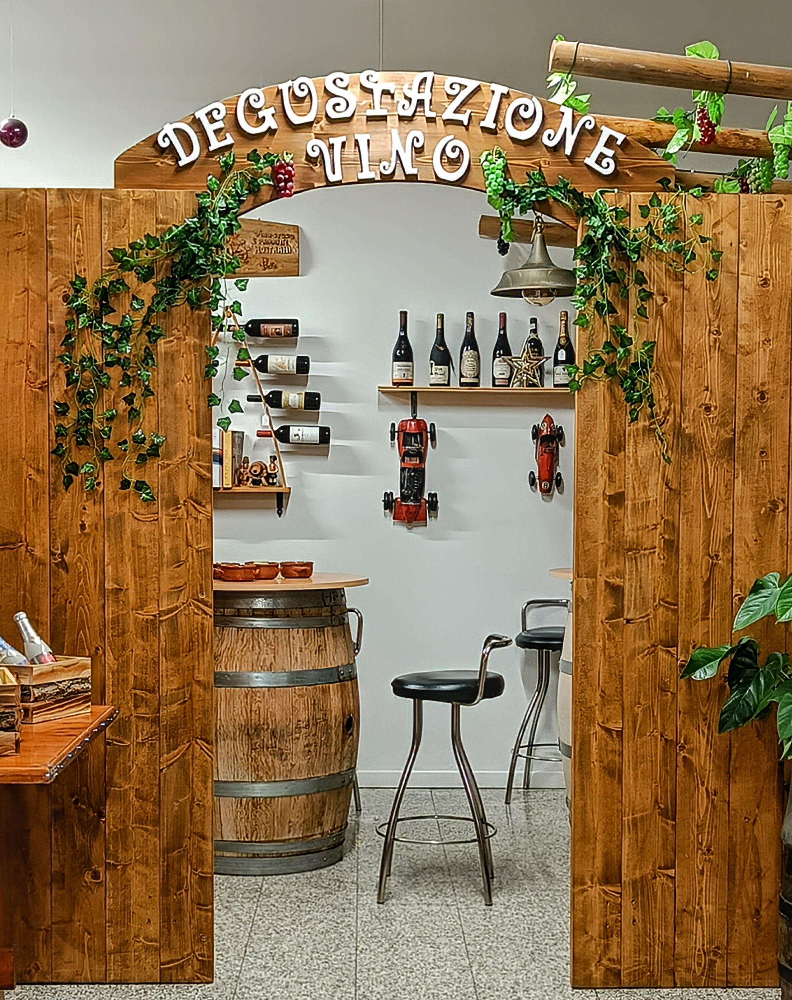
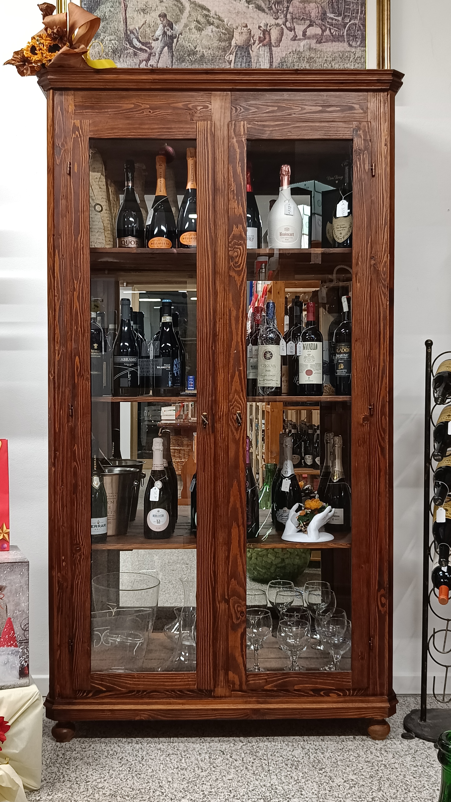

La Nostra Sala Degustazione

Vini da collezione esposti

Decorata in stile retrò

TV per l'intrattenimento
La Nostra Storia

Passione e Tradizione
L'Enoteca Gusto e Sapori nasce dalla volontà di condividere un amore profondo per il vino e la sua cultura. Da anni selezioniamo con cura le migliori etichette, viaggiando attraverso le regioni vinicole più prestigiose per scoprire tesori nascosti e produttori appassionati.
La nostra missione è offrire un'esperienza unica, guidando i nostri clienti in un percorso di scoperta sensoriale. Crediamo che ogni bottiglia racconti una storia, un territorio e il lavoro di chi l'ha creata. Per questo, ogni vino nella nostra enoteca è scelto non solo per la sua qualità, ma anche per l'emozione che sa trasmettere.

La Nostra Selezione
La nostra cantina è il cuore pulsante dell'enoteca. Custodiamo un'ampia varietà di etichette, dai grandi classici italiani ai vini internazionali, con un'attenzione particolare per le piccole produzioni artigianali e i vitigni autoctoni. Ogni bottiglia è stata scelta per rappresentare l'eccellenza del suo territorio.
Oltre al vino, offriamo una selezione di prodotti gastronomici di alta qualità: formaggi affinati, salumi tradizionali, oli extra vergine e altre specialità che si abbinano perfettamente ai nostri vini, per un'esperienza di gusto completa.